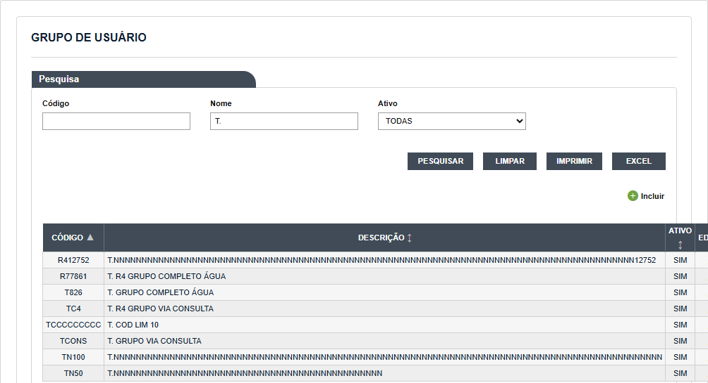
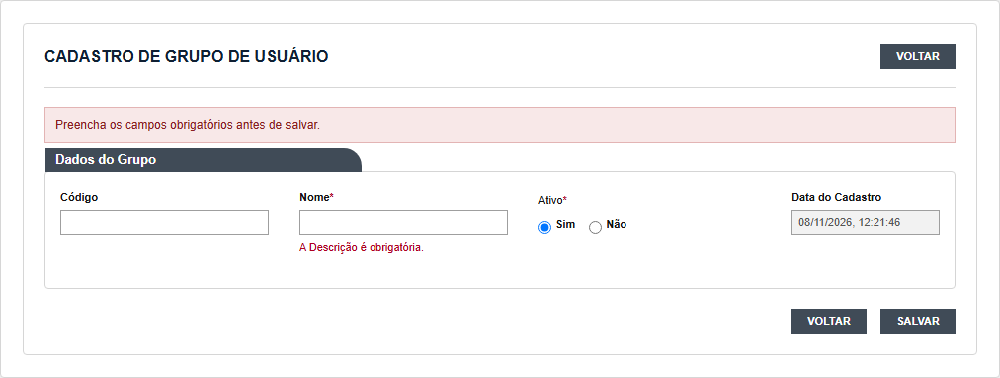
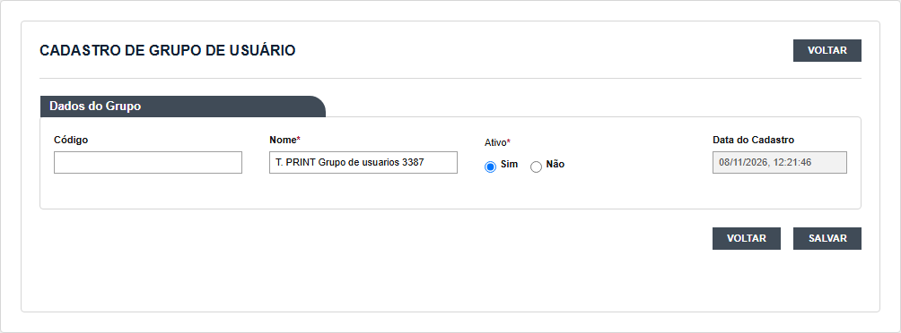
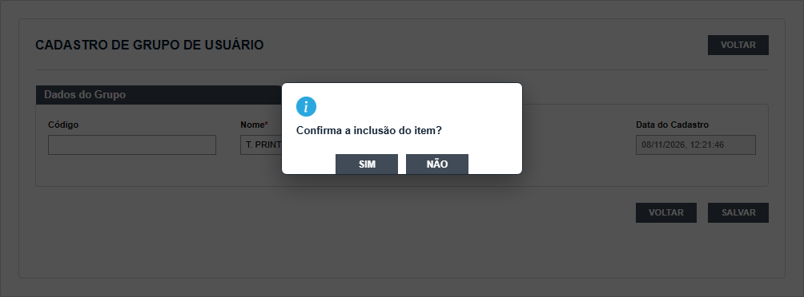
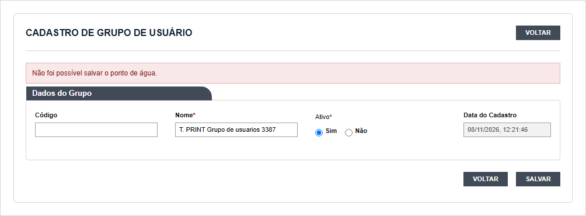
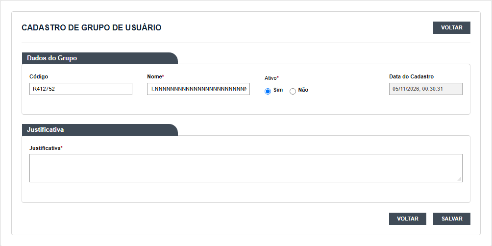
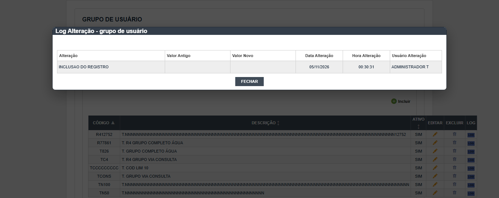
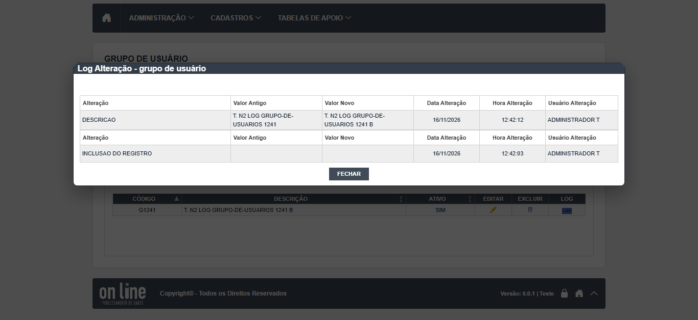

Passo a passo
- No menu Cadastros, abra Grupo de usuários. A tela "GRUPO DE USUÁRIO" mostra o quadro Pesquisa com Código, Nome e Ativo (TODAS), os botões PESQUISAR, LIMPAR, IMPRIMIR e EXCEL, o atalho Incluir e a lista com CÓDIGO, DESCRIÇÃO, ATIVO, EDITAR, EXCLUIR e LOG.

A imagem mostra a lista filtrada com "T." no campo Nome: os grupos de teste aparecem com seus códigos (R412752, T826, TCONS e outros); as colunas de ação ficam à direita, fora da área capturada.
- Clique em Incluir. Abre "CADASTRO DE GRUPO DE USUÁRIO" com o quadro Dados do Grupo: Código, Nome*, Ativo* (Sim/Não) e Data do Cadastro (travada, já preenchida), e os botões VOLTAR e SALVAR. Não há campo de justificativa na inclusão.
A imagem mostra o formulário em branco: Código e Nome vazios, Ativo = Sim e a Data do Cadastro preenchida. Só Nome e Ativo têm asterisco; o Código também é obrigatório no servidor (DV-PRI-N-026).
- Se salvar sem preencher o Nome, o sistema recusa.

A imagem mostra a faixa vermelha "Preencha os campos obrigatórios antes de salvar." e, sob o campo Nome, a linha "A Descrição é obrigatória." (o campo se chama Nome, mas a mensagem diz Descrição).
- Informe o Código (até 10 caracteres, segundo o teste de 18/10/2026) e o Nome (o servidor aceita até uma extensão entre 100 e 149 caracteres; o nome é gravado em maiúsculas). Deixe Ativo = Sim.

A imagem mostra o Nome "T. PRINT Grupo de usuarios 3387" preenchido e o Código em branco. Nesta captura o código não foi digitado, o que explica a recusa vista no passo 6.
- Clique em SALVAR. O sistema pergunta "Confirma a inclusão do item?". Responda SIM.

A imagem mostra a janela azul "Confirma a inclusão do item?" com SIM e NÃO.
- Se o Código está vazio, a tela pergunta, o servidor recusa e a tela mostra uma mensagem que pertence a outra tela:

A imagem (arquivo de "mensagem de sucesso" do manifesto) mostra, na verdade, a faixa vermelha "Não foi possível salvar o ponto de água." no alto do formulário com o Nome preenchido e o Código vazio: é a recusa do DV-PRI-N-026, e não a mensagem de sucesso. Com o Código preenchido, o grupo grava e entra na lista (casos R3-GU-02); a janela de sucesso desta tela não foi capturada (ver "Prints que faltam").
- Para alterar, clique no lápis da linha. O formulário abre com o grupo preenchido e o quadro Justificativa*, obrigatório na alteração. Não há ícone de "visualizar": o lápis abre este formulário.

A imagem mostra o grupo de código R412752 aberto, com o quadro Justificativa* vazio e os botões VOLTAR e SALVAR.
Sem justificativa o sistema recusa ("A Justificativa é obrigatória."); com justificativa grava. Para inativar, marque Ativo = Não e informe a justificativa.
-
Para excluir, clique na lixeira da linha, informe a justificativa e confirme. Sem justificativa o sistema recusa ("A justificativa é obrigatória."); com justificativa o grupo é excluído (204) sem mensagem visível. Se o grupo está em uso por um profissional, o servidor recusa ("Exclusao invalida, existem referencias com outras tabelas."), mas a tela não mostra mensagem (DV-PRI-N-024).
-
Para ver o histórico, clique em LOG.

A imagem mostra a janela "Log Alteração - grupo de usuário" com a linha "INCLUSAO DO REGISTRO" (sem acento), data, hora e o usuário ADMINISTRADOR T, sobre a lista.

Histórico de um grupo cujo nome foi alterado com justificativa: a linha DESCRICAO mostra o valor antigo e o novo, mas não há coluna nem linha com a justificativa digitada (DV-PRI-N-029).
-
IMPRIMIR gera o PDF: respeita o filtro ("NOME: T. GRUPO"), mas o título é "RELATÓRIO DE ENTRADA" e o cabeçalho traz "SUA LOGO AQUI". EXCEL baixa um arquivo com todos os grupos, ignorando o filtro (DV-PRI-N-025).
-
A pesquisa ignora maiúsculas e minúsculas, mas não o acento: "água" e "ÁGUA" acham o mesmo grupo; "AGUA" não.